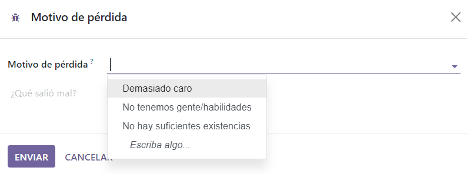
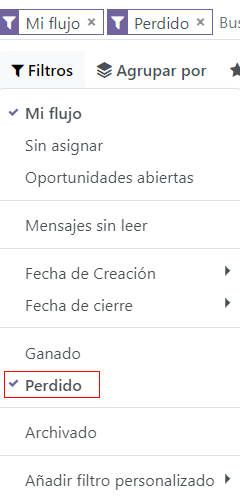
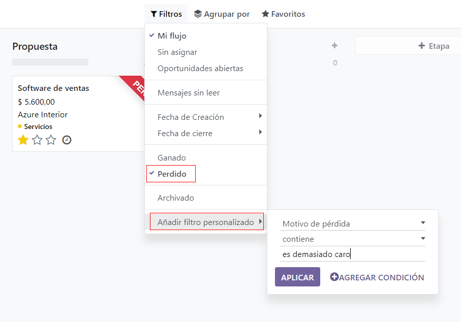
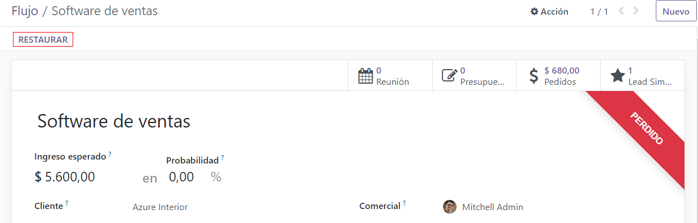

Gestión de oportunidades perdidas¶
No todas las oportunidades resultan en una venta. Para mantener el flujo actualizado debe identificar las oportunidades perdidas. Saber por qué se perdió una oportunidad puede ser muy util para futuras oportunidades.
Marque un lead como perdido¶
Para marcar un lead como perdido, abra la aplicación y seleccione un lead del flujo. De esta manera podrá ver el formulario de detalles del lead.
Después, haga clic en el botón Perdido que podrá encontrar en la parte superior del formulario del lead.
Esto abrirá la ventana emergente donde encontrará un campo de Motivo de pérdida. En el menú desplegable, seleccione un motivo de pérdida existente. Si ninguno de los motivos que se muestran aplican para este caso puede crear uno, solo lo tiene que ingresar en el campo Motivo de pérdida y haga clic en Crear.
Puede agregar notas o comentarios en donde dice nota de cierre, abajo del campo Motivo de pérdida.
Una vez que haya ingresado la información deseada en la ventana emergente de Motivo de pérdida, haga clic en Marcar como perdido.
Al hacer clic en Marcar como perdido la ventana emergente desaparecerá y Odoo lo llevará de vuelta al formulario de detalles del lead, donde aparecerá un nuevo listón de Perdido en la esquina superior derecha del lead.
Creación y edición de motivos de pérdida¶
Para crear un nuevo motivo de pérdida, o editar uno existente, vaya a la aplicación .
Para editar un motivo existente, haga clic en el motivo que se debería modificar. Una vez que lo seleccione, cambie la descripción del motivo en el campo Descripción. Una vez que termine, haga clic en el botón Guardar ubicado en la esquina superior derecha.
Para crear un nuevo motivo de pérdida, haga clic en el botón Nuevo en la esquina superior izquierda de la página Motivos de pérdida. Así se mostrará una nueva línea en blanco en el campo Descripción donde podrá escribir un nuevo motivo de pérdida en esa línea nueva. Una vez que haya terminado, haga clic en Guardar.
Recuperar las oportunidades perdidas¶
Para recuperar oportunidades perdidas en la aplicación CRM de Odoo, abra la aplicación CRM y quédese en el tablero principal llamado Flujo. Una vez aquí, haga clic en el menú desplegable Filtos que se encuentra en la barra de búsqueda.
En el menú desplegable Filtros seleccione la opción Perdido. Al hacerlo, en la página Flujo solo podrá ver los leads que se hayan marcado como perdidas.
Para filtrar leads por un motivo específico de pérdida, seleccione . Al hacerlo aparecerá una ventana emergente con tres nuevos filtros.
En el menú desplegable del primer campo, seleccione Motivo de pérdida. En el menú desplegable del segundo campo, seleccione Contiene. Después, en el tercer campo de la ventana emergente Agregar campo personalizado escriba las palabras clave específicas. Para finalizar, haga clic en Agregar, al hacer esto, Odoo mostrará todos los leads perdidos que contengan las palabras clave que especificó.
Restablecer las oportunidades perdidas¶
Para restaurar una oportunidad perdida, vaya al tablero principal de Flujo en la aplicación CRM, abra el menú desplegable de Filtros y seleccione la opción Perdido. De esta manera se mostrarán las oportunidades Perdidas en la página.
En el kanban haga clic en el panel de la oportunidad perdida para restaurarla; se abrirá el formulario de detalles del lead.
Una vez en el formulario de detalles del lead, haga clic en el botón Restaurar que se enuentra en la esquina superior izquierda. Así se quitará el listón rojo de Perdido del formulario del lead y habrá restaurado la oportunidad.
Restaurar varias oportunidades al mismo tiempo¶
Para restaurar varias oportunidades al mismo tiempo, vaya al tablero principal de Flujo en la aplicación CRM, abra el menú desplegable de Filtros y seleccione la opción Perdido.
Después, seleccione el icono de tres líneas ☰ (lista) en la esquina superior derecha para activar la vista de lista. Al hacer esto, todos los leads del Flujo se mostrarán en forma de lista. Seleccione la casilla de verificación a la izquierda de cada lead u oportunidad que quiere restaurar.
Ya que haya seleccionado los leads u oportunidades deseadas, haga clic en el menú desplegable de ⚙️ Acción (engranaje) en la parte superior de la página del Flujo. Desde el menú desplegable de ⚙️ Acción (engranaje) seleccione Desarchivar.
Al hacer esto, las oportunidades seleccionadas desaparecerán de la página del Flujo puesto que ya no entran en el filtro Perdido. Para volver a ver los leads que acaba de restaurar, quite el filtro de la barra de búsqueda.
Ver también